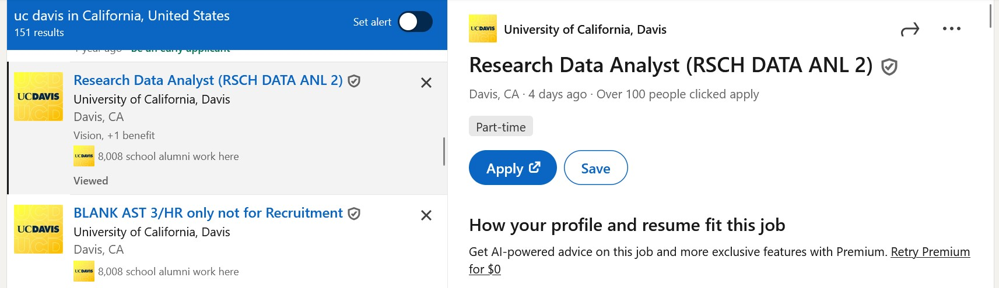
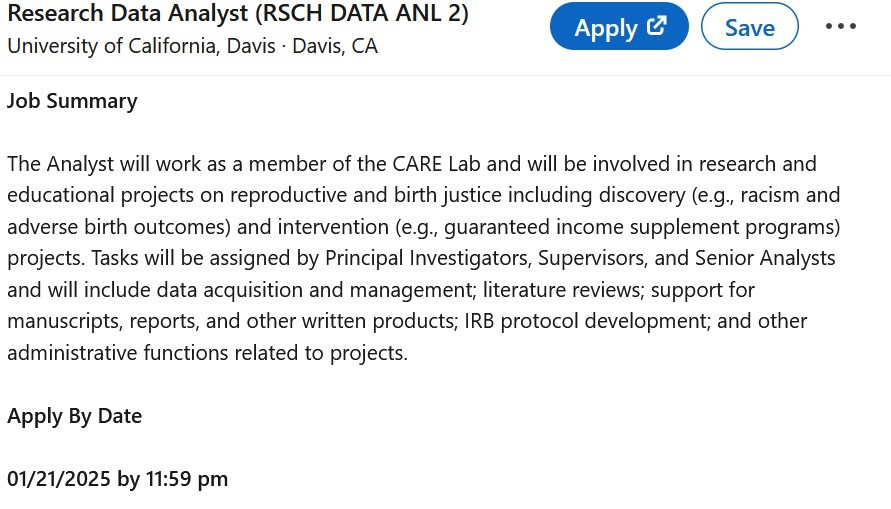
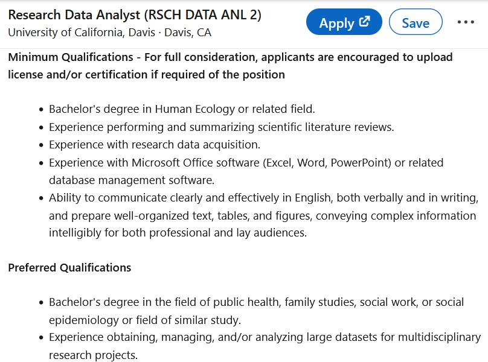
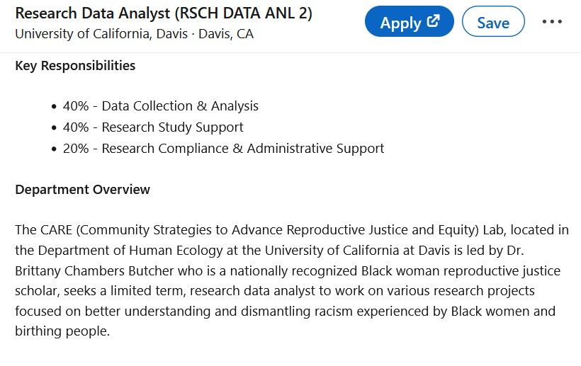
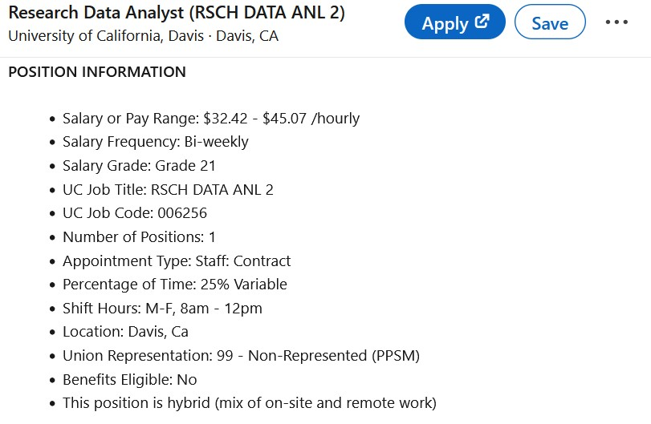

flowchart LR A[Prepping materials] --> B[Identifying <br/>positions] B --> C[Submitting <br/>applications] C --> D[Interviews] D --> E[Job Offer]
Searching for Work
A Psychology Undergraduate Guide (PUG)
Maia L. Southwick
Welcome!
- Access the workshop materials here: https://msouthwick-edu.github.io/2025wq_psych-job-search/
- You will need easy access to your laptop and connection to internet.
Overview
Objectives
Where to search?
- Identify relevant places to source jobs
How to search?
- Leverage tools to aid your job search
What comes up in the search?
- Understand the main components of a job posting to inform your search
Introductions
Who am I?
- Maia Southwick (she/her)
- PhD student studying developmental and quantitative psychology
- B.S. in Psychology (honors) and Health, Society, & Policy
- economics, sociology, quantitative analysis
- Worked in a variety of professional contexts
Who are you?
- Turn to your neighbor(s) and introduce yourself
- Your name, major, year in school
- Why did you choose your major?
- What are your career goals?
Typical Job Search Timeline
We will be focusing on identifying positions:
- Requires some understanding of your job needs and career goals (e.g., using online assessments)
- Learning where you can find open positions
- Learning how to implement effective search strategies
- Discern between roles that align with your needs and expectations and those that don’t.
- Tailor your application materials to the position ahead of submitting.
Step 1: Where to Search
Previous Experience
How have you found an open role in the past?
- Post in the chat or unmute!
Identifying Potential Employers & Open Positions
Chapter 1
- Job Boards
- LinkedIn, Handshake, Indeed, & more
- Organizations’ Career Pages
- Events
- Networking & Informal Channels + Cold Outreach
But wait… a Q&A!
Questions about…
- Psych-specific job boards?
- Norms for reaching out to others about jobs?
- ahhhhh!? 😬
LinkedIn: An Introduction
Chapter 1, Section 2.1
- At this point… Professionalized Facebook
- BUT useful for a variety of reasons:
- Job board
- Networking
- Building an online presence
- Let’s check it out…
Setting Up an Account
Optional, but it’ll be a part of future activities
- Go to linkedin.com: https://www.linkedin.com/.
- Click “Join now” under the three sign-in options.
- Continue to fill out the information requested.
Post in chat, DM me, or unmute if you have any questions. Once you’re done, raise your hand.
03:00
Step 1 Complete!
Step 2: How to Search
Points to Consider in a Job Search
Chapter 2
- Be open-minded
- Be cautious
- Be patient
Navigating the “Jobs” Section
Chapter 2, Section 2
- Hopping over to LinkedIn!
- Be able to identify the:
- Search box
- Set-up a search alert
- Job postings
Your Turn!
- What are are some example job titles?
- Post in chat or on the whiteboard.
- Let’s try another way! https://chatgpt.com/
- Example job titles: https://tinyurl.com/mppvyf49
- Possible job families (https://www.imaginephd.com/job-families).
- Take a couple minutes to generate some search terms
- You could even ask ChatGPT, “What are some job titles for entry-level roles requiring a psychology degree?”
- Feel free to push it to be more specific.
- Find other prompts here (UCD Career Center: https://careercenter.ucdavis.edu/resumes-and-materials/using-ai)
- We’ll come back to share what we’ve found.
05:00
What did you find?
Post in the chat or unmute.
Actually Searching
Chapter 2, Section 2.2.2
After putting in key terms, there are a couple of different things you can do:
- Filtering:
- Experience level
- Easy apply
- Salary
- Set up search alerts
- Direct alerts from an organization’s profile
- Manage those search alerts in your email inbox!
- Identify potential employers
Step 2 Complete!
Step 3: What Comes Up
What are you looking for in a role? What’s important to you?
Chapter 3, Section 1
- Post in the chat or unmute!
What comprises a job posting?
Job Summary
Qualifications
Consider applying even if you don’t meet 100% of the qualifications!
Job Responsibilities
Position Information
Benefits
Share Your Results
- Select some of your search results and review.
- Compare with neighbors the positions you’ve found.
- How do the benefits differ?
- How do the descriptions differ?
03:00
Other Information
- Reach out to people who are current or former employees
- Red flags…
- No hard and fast rules, but check out company reviews on Glassdoor (Ch. 3, Section 1: “Employer’s Reputation”)
- Job scams (more here: https://careercenter.ucdavis.edu/job-and-internship-search/job-scams)
Next Steps
- Schedule a time or start date for your job search. Stick to it. Treat it like a part-time position.
- Find someone who can support you in this process.
- Check out resources on campus
- UCD Career Center
- Student Health & Counseling Services
- Ask people you know about their job search experiences (this could include TAs, instructors, etc.)
Completed the Final Step for Today!

Searching for Work: https://tinyurl.com/pug-workshop